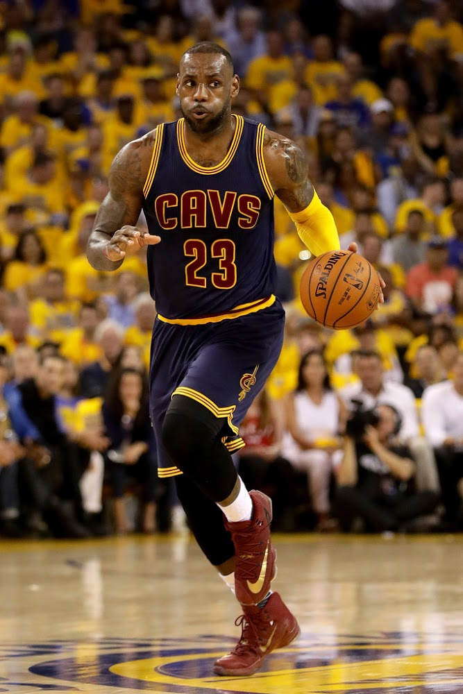

 Under sommaren 2014 tog LeBron James beslutet att bli free agent, då han använde en klausul i hans kontrakt som tillät honom att hoppa av sitt kontrakt ett år innan det skulle gå ut. Den tvåfaldige NBA-mästaren blev därmed kontraktslös och valde då att återvända "hem" genom att skriva på med sin nygamla klubb Cleveland Cavaliers efter fyra år i Miami Heat. Han skrev på för 2 år, där han totalt får 42 miljoner dollar. LeBron James och hans Cleveland Cavaliers tog sig till finalen men förlorade mot Stephen Curry och hans Golden State Warriors.
Under säsongen 2015-16 så snittade LeBron James 25.3 poäng och vann East-ligan. Under slutspelen så utklassade Cleveland Cavaliers tillsammans med LeBron James Detriot Pistions med 4-0. I Conference Semis så mötte Cleveland Cavaliers Atlanta Hawks och slutade också med 4-0. I Conference Finals slutade det 4-2 till Cleveland Cavaliers. I finalen så mötte Cleveland Cavaliers och LeBron James regerande mästarna Golden State Warriors. Golden State Warriors var favoriterna efter ha vunnit 73 matcher i ligan och tog Chicago Bulls och Michael Jordans 72-10 rekord. Det började dåligt för LeBron och Cleveland Cavaliers som förlorade de två första matcherna på bortaplan. Under matchen i Cleveland så vann Cleveland och det stod 2-1 till Golden State Warriors. Matchen därefter var också på Clevelands hemmaplan men LeBron och hans lag kunde inte stå emot Golden State och förlorade. Det stod 3-1 till Golden State och de var klarfavoriterna till att vinna championshipet, dock så vaknade LeBron James till och tog sitt lag till Game 7 och lyckades där vinna i Oracle Arena på Golden States hemmaarena. De är de första i historien som kommer tillbaka ifrån en 3-1 ledning i finalen. Lebron utsågs till NBA Finals MVP och kammade hem sin tredje titel.